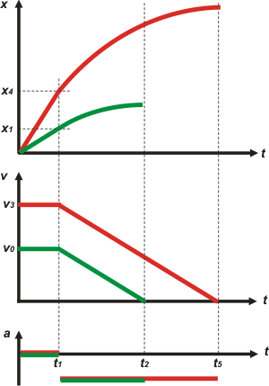

|
NO ME SALEN
PROBLEMAS RESUELTOS DE FÍSICA DEL CBC
MRUV
|
|

|
Adicional No me salen 20 - El conductor de un automóvil que avanza a 54 km/h (en condiciones normales de reflejos, frenos, cubiertas, pavimento seco, etcétera) necesita al menos 30 metros para frenar. Considerando que el tiempo de reacción es de 0,75 segundos, ¿cuánto necesitará si marcha a 144 km/h?
Acá se nota como nunca la necesidad de hacer un buen trabajo de interpretación de enunciado, y el servicio que los esquemas prestan para ese fin. Si antes hiciste el ejercicio adicional 3, este te va a resultar más sencillo. La cuestión es que se nos presentan dos movimientos diferentes: el automovilista se mueve de modo uniforme y ve el árbol caído; durante 0,75 s mantiene ese movimiento aún a su pesar, y recién después comienza a frenarse, es decir, a moverse de modo variado.
|
 |
|
|
En este esquema (no es el único posible, por supuesto). Al día A llamamos O al punto en que se produce la decisión de frenar, 1 al punto en que Charly (¿se llamaba así?) consigue apretar el freno, y 2 al punto en que se detiene... y todo ese recorrido mide 30 metros.
El día B Charly se mueve a una velocidad de 144 km/h (una velocidad prohibida en la República Argentina. Y para detener el vehículo necesitará una distancia mayor. El tiempo de reacción es el mismo siempre (el conductor no cambia). Se trata de un movimiento igual al anterior, cualitativamente y llamaremos 3, 4 y 5 a los eventos salientes.
Como te habrás dado cuenta ya unifiqué las unidades con las que vamos a trabajar, y pasé las velocidades a m/s. Otro punto clave de la resolución de este ejercicio es aceptar que las aceleraciones con las que frena son idénticas (ya que eso depende de las cubiertas, los frenos, etcétera... que son iguales). En ambos casos utiliza la aceleración máxima de frenado que puede (ya que el enunciado dice "al menos...").
¿Cuántas ecuaciones describen el problema? Seis: tres para cada día, una para el movimiento uniforme, dos para el variado (la de posición y la de velocidad). Los modelos correspondientes ya te los sabés de memoria pero miralos y fijate cómo reemplacé las constantes (to, xo, vo y a): con las características del punto O y 1 para las del día A y las del punto 3 y 4 para las del día B. |
|
|
| MRU |
x = 15 m/s . t
|
|
Estas son las ecuaciones que describen TODO el fenómeno del movimiento vivido el día A. |
| MRUV |
x = x1 + 15 m/s . ( t – 0,75 s ) + ½ a . ( t – 0,75 s )2
v = 15 m/s + a . ( t – 0,75 s ) |
|
| MRU |
x = 40 m/s . t |
|
Estas son las ecuaciones que describen TODO el fenómeno del movimiento vivido el día B. |
| MRUV |
x = x4 + 15 m/s . ( t – 0,75 s ) + ½ a . ( t – 0,75 s )2
v = 40 m/s + a . ( t – 0,75 s ) |
|
Entonces no queda otra cosa que hacer que usarlas. Cada una de ellas hablará del único punto del que tiene algo interesante que decir. Fijate: |
|
|
 |
x1 = 15 m/s . 0,75 s |
[1] |
| 30 m = x1 + 15 m/s . ( t2 – 0,75 s ) + ½ a . ( t2 – 0,75 s )2 |
[2] |
| 0 m/s = 15 m/s + a . ( t2 – 0,75 s ) |
[3] |
| x4 = 40 m/s . 0,75 s |
[4] |
| x5 = x4 + 40 m/s . ( t5 – 0,75 s ) + ½ a . ( t5 – 0,75 s )2 |
[5] |
| 0 m/s = 40 m/s + a . ( t5 – 0,75 s ) |
[6] |
|
|
|
Inevitablemente... hemos caído en un sistema de tantas ecuaciones como incógnitas (6x6). La física del problema ha terminado.
El resto es álgebra. En este caso parece difícil pero es muy fácil. De todos modos... lo importante es intentarlo, sabiendo que no es física. Acá mostramos un camino de resolución.
De [1]
x1 = 11,25 m
de la [3] despejamos a
– 15 m/s = a . ( t2 – 0,75 s )
a = – 15 m/s / ( t2 – 0,75 s )
Y eso lo metemos en la [2] (yo abrevio un poco, pero vos hace todos los pasos).
30 m = 11,25 m + ½ 15 m/s . ( t2 – 0,75 s )
de ahí despejo t2
t2 = 3,25 s
con ese dato vuelvo a la [2] y también a la [3] para verificar que da lo mimo el valor de a
a = – 6 m/s²
Ahora pasamos al día B. Arrancamos con la ecuación [4]
x4 = 40 m/s . 0,75 s
x4 = 30 m
De la [4] averiguamos t5
– 40 m/s = – 6 m/s² . ( t5 – 0,75 s )
t5 = 7,42 s
Cos todos esos datos vamos a la [5] y hallamos la respuesta al ejercicio.
x5 = 30 m + 40 m/s . ( 6,67 s ) – 3 m/s² . ( 6,67 s )2
|
|
|
| |
|
|
Observación: fijate que la velocidad de Charly era apenas un poco más de 2,5 veces mayor. Sin embargo la distancia de frenado ¡creció 5,5 veces! Por último, los gráficos. Fijate cómo los hago: encolumnados, siempre en el mismo orden, y con una misma escala de tiempo; algunos llaman a esta forma de graficar: "en tándem". La curva es un arco de parábola. |
|
|
|  |
 |
Cuando te familiarices con los gráficos, vas a ver que son terriblemente descriptivos. Los tres gráficos, trabajando en conjunto (en tándem), tienen mucha más precisión y claridad que el lenguaje hablado.
Por otro lado, albergan más información que la que en principio te están dando. Esa información está en las áreas, en las concordancias verticales, en los puntos de la curva en que cambia el movimiento... ya vas a ir descubriéndolos de a poco. |
|
|
|
| Los gráficos no estan en escala. |
|
 |
| DESAFIO: ¿Cuánto valen las áreas encerradas bajo las curvas velocidad-tiempo? |
|
| Algunos derechos reservados.
Se permite su reproducción citando la fuente (me refiero a la reproducción de este excelente material didáctico, no a la reproducción sexual de sus lectores, está claro). Última actualización mar-12. Buenos Aires, Argentina. |
|
|
| |
|